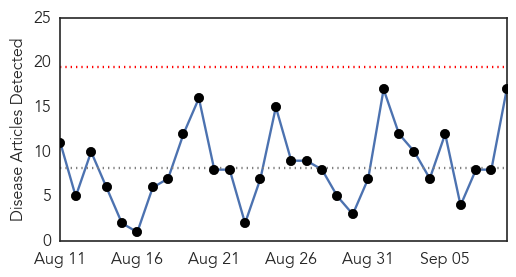
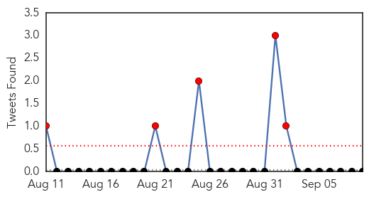
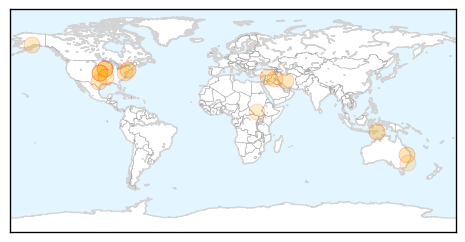

30 Day Trends
Web: 0 alerts, 0 warnings
Twitter: 4 alerts, 0 warnings
Top Articles:
- 0.998
- Thousands of confirmed influenza cases reported to Victorian Department of Health
- 0.977
- Avian flu outbreak causes concerns on Delmarva
- 0.970
- New Jersey Visiting Nurse Association Announces Community Flu Clinics
- 0.937
- WHO calls for better prevention, mitigation of health emergencies
- 0.846
- National Institutes of Health Grants $1.85 Million to K-State To Study Virus, Poxvirus Threats
- 0.838
- Federal Government decides against funding a vaccination program for the infectious Q fever disease
- 0.835
- $1.85M NIH Grant Funds Project to Study Virus Interaction with the Immune System and Identify Poxvirus Threats
- 0.800
- Genetically modified chickens could beat bird flu
- 0.751
- September 9, 2015 Archives
- 0.751
- September 9, 2015 Archives
- 0.751
- September 8, 2015 Archives
- 0.751
- September 8, 2015 Archives
- 0.751
- September 8, 2015 Archives
- 0.707
- Frankenvirus Emerges From Melting Siberia
- 0.697
- Preparing For Bird Flu This Fall
- 0.594
- Scientists find new benefit from inhaled anaesthetics to effectively combat lung infections
- 0.502
- Prehistoric 'Frankenvirus' Mollivirus sibericum uncovered in Siberian permafrost
Top Tweets:
-
No tweets found for Sep 09, 2015
Web/News Articles
Tweets
Article Locations
Article Confidences